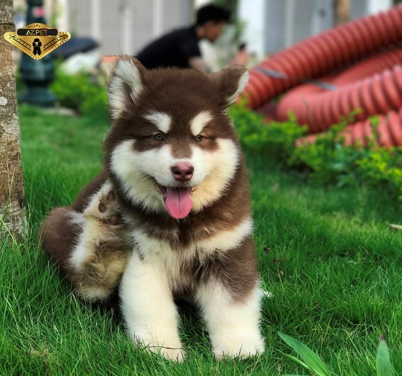

Alaska
-Chó Alaska cũng là một giống chó xứ lạnh giống Husky và Samoyed được thuần hóa bởi bộ tộc Mahlemute.
-Khi mới bắt đầu thuần hóa, chó Alaska cũng chỉ có kích thước ngang với Husky nhưng được người Eskimo lai tao để có được những chú chó Alaska to khỏe, dẻo dai và chịu được thời tiết khắc nghiệt hơn.
-Với bộ lông đẹp của chó xứ lạnh, chó Alaska đã nhanh chóng đã công nhận là 1 trong 10 giống chó đẹp nhất thế giới.
-Ở Việt Nam, một chú chó Alaska thuần chủng có giá từ 8-10 triệu.
